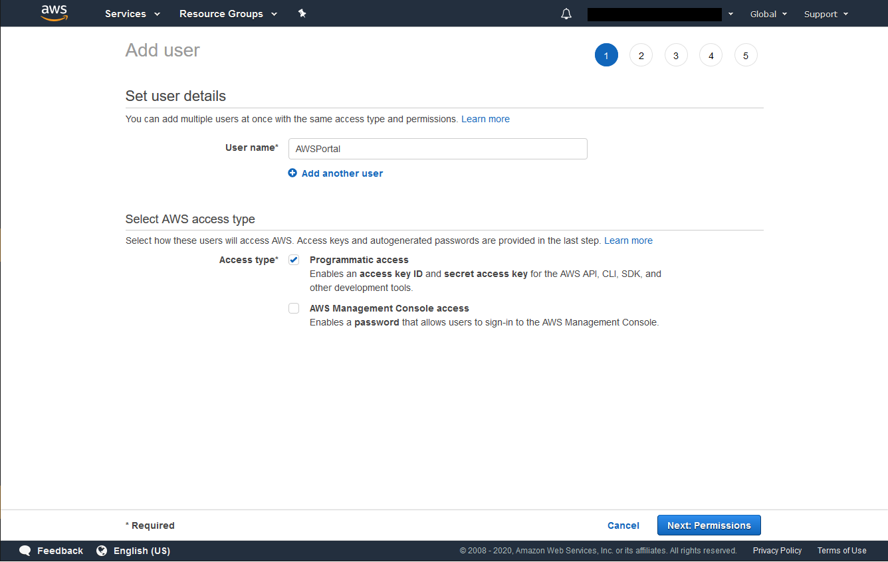
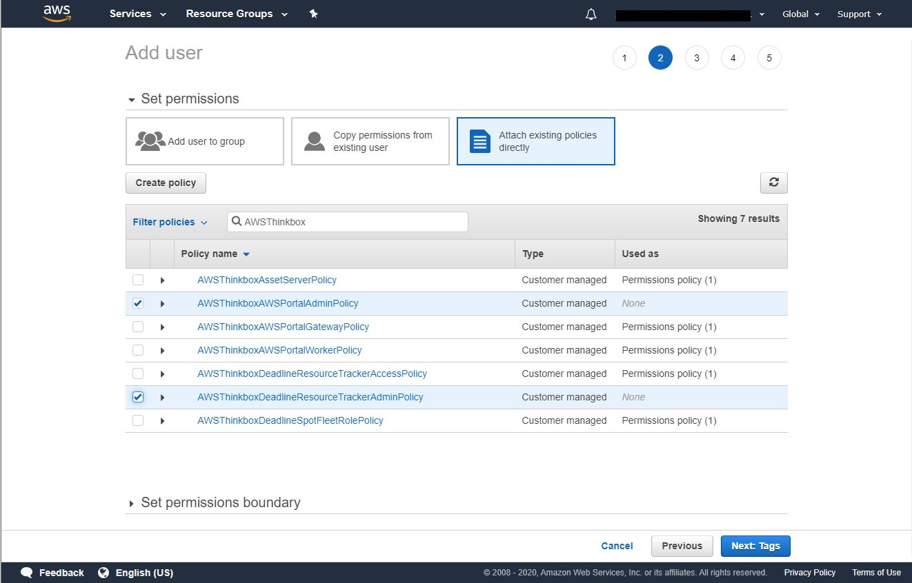
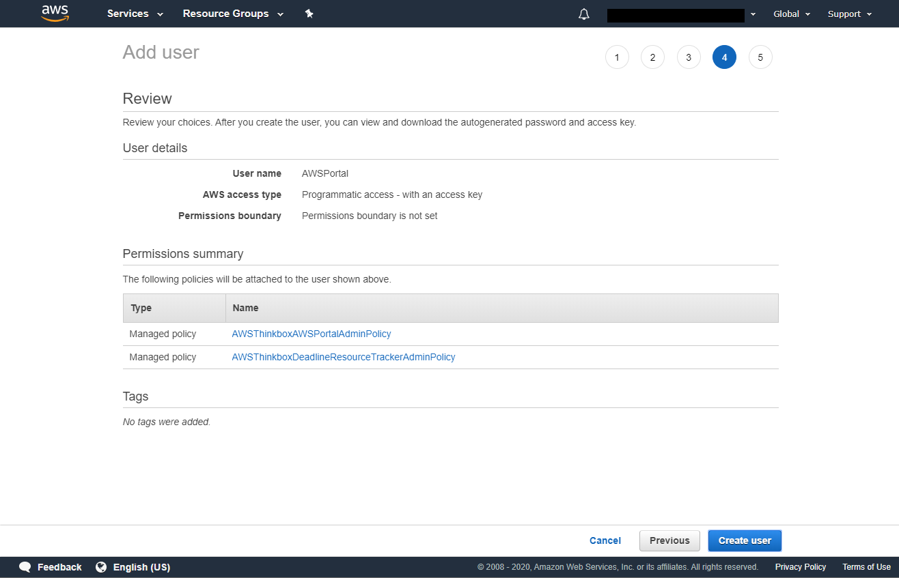
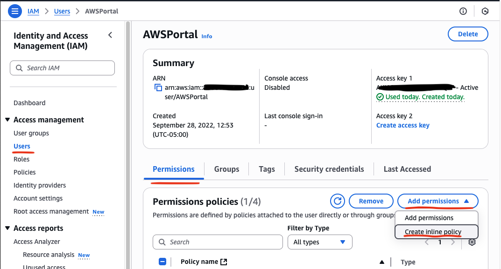
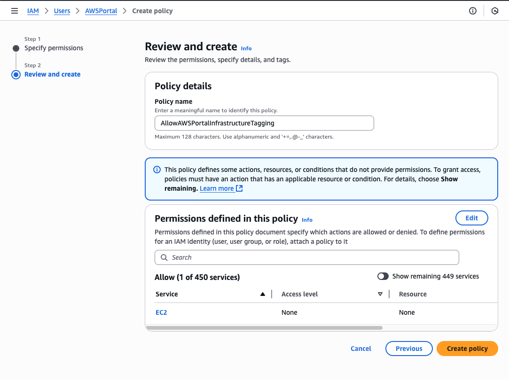

Note
While AWS Portal can enable cloud rendering in Deadline 10, AWS Deadline Cloud is a newer offering that has been built specifically for the cloud. It is a fully managed service that does not require installation or maintenance of infrastructure (e.g., repository, database, or license server). Worker fleet auto-scaling, asset synching, and licensing are all managed natively within AWS by Deadline Cloud. See here for more information on Deadline Cloud and its capabilities.
Creating an AWSPortal IAM User¶
Note
If you have not already created an Admin user, instructions for creating one can be found here: Creating an Admin IAM User.
First, log into the AWS Console using the aws account you created.
Click on Services at the top of the AWS Console, and find the IAM section under Security, Identity and Compliance. Select Users

Click on the Add user button at the top. Enter the User Name AWSPortal and select the Programmatic Access checkbox. Click on the Next: Permissions button to proceed.
Search for AWSThinkboxAWSPortalAdminPolicy and AWSThinkboxDeadlineResourceTrackerAdminPolicy in the search box and check them in the list below. Continue by clicking on the Next: Review button.
You can add tags with additional data to the user but they are not required. Click on the Next: Review button to continue.

Verify that it looks correct and click Create user.
Once the user is created you’ll see a confirmation screen. Here you’ll be able to get your Access Key and Secret Key, which you’ll need when you login to AWS Portal console the first time.
Warning
This is the only time you’ll be able to get your Secret Key, so be sure to note it down, or press the ‘Download .csv’ button to download a file which contains both keys.
Warning
This secret key can be used to access your AWS account. It is important that you keep it stored securely. Please refer AWS Guidelines for standard best practices for management of AWS access keys.
Adding Additional Inline Policies to AWSPortal IAM User¶
You will need to add additional policies to your AWSPortal IAM user after creation. To do this, the following outlines how to create a policy that will allow your AWS Portal infrastructure to be deployed using your AWS Portal IAM User.
Navigate to the user. Click on Services at the top of the AWS Console, and find the IAM section under Security, Identity and Compliance. Select Users.
Click on the IAM user that you created (i.e. the AWSPortal user).
Click on Add permissions, followed by Create inline policy.
Click the JSON` tab and paste in the following:
{
"Version": "2012-10-17",
"Statement": [
{
"Effect": "Allow",
"Action": [
"ec2:CreateTags",
"ec2:DeleteTags"
],
"Resource": [
"arn:aws:ec2:*:*:vpc-endpoint/*"
]
}
]
}
Click Next. Enter the Policy name AllowAWSPortalInfrastructureTagging and click Create policy to proceed.

{kind=link}
{kind=link}
{kind=link}
{kind=link}
{kind=link}
{kind=link}
{kind=link}